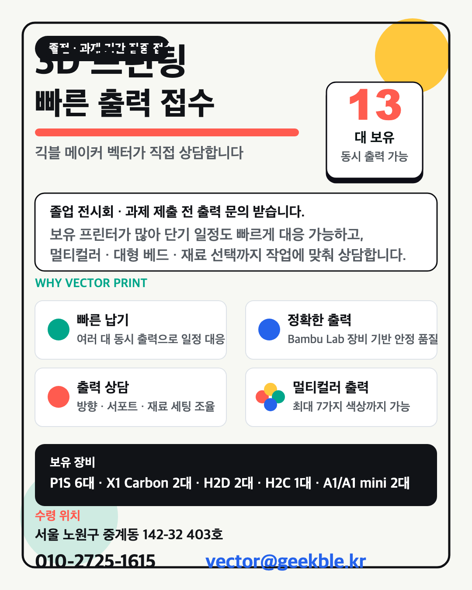
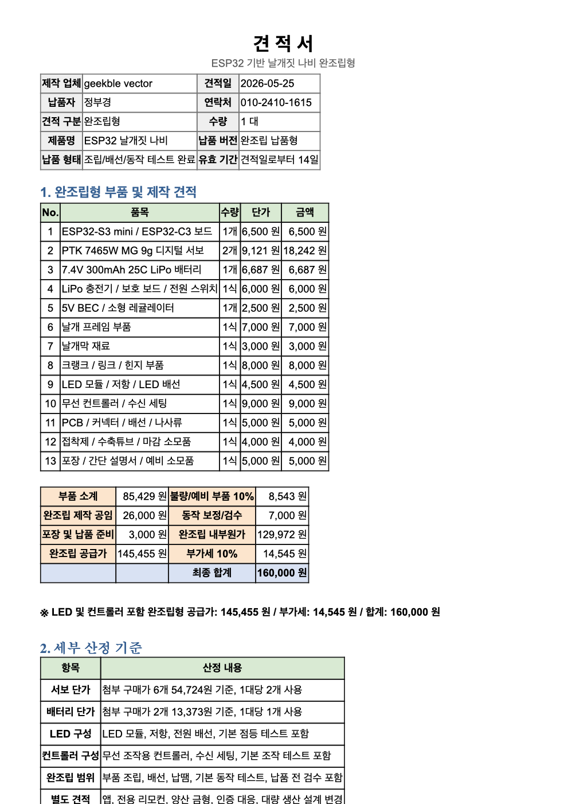

← Works
Geekble · Maker · Production
긱블 메이커로 만드는 콘텐츠
현재 긱블 메이커로 활동하며 아이디어를 하드웨어, 3D 프린팅, 촬영 가능한 제작물로 연결합니다. 이전에는 6개월간 PD로 제작 흐름과 콘텐츠 기획을 조율했습니다.
Maker Profile
GEEKBLE VECTOR
만드는 과정 자체가 콘텐츠가 되도록, 기획과 제작 사이의 간격을 줄이는 메이커 포트폴리오.
Now긱블 메이커로 활동 중
6M긱블 PD 활동 경험
3D하드웨어 · 프린팅 · 제작형 콘텐츠
Maker
아이디어를 실제로 작동하는 물건으로 옮깁니다. 회로, 구조, 3D 출력, 조립 과정을 콘텐츠의 핵심 장면으로 설계합니다.
Producer
6개월간 PD로 활동하며 콘텐츠 아이디어를 촬영 가능한 기획으로 정리하고, 제작 일정과 촬영 흐름을 조율했습니다.
Designer
기술적인 내용을 보는 사람이 바로 이해할 수 있도록 썸네일, 화면 구성, 정보 구조를 명확하게 정리합니다.

01 · Making System
3D 프린팅과 하드웨어 제작을 콘텐츠의 중심으로 구성합니다.
- 프린팅, 조립, 테스트 과정을 콘텐츠 장면으로 설계
- 시청자가 이해하기 쉬운 제작 흐름과 설명 구조 정리
- 작동 원리, 실패 지점, 개선 포인트를 결과물과 함께 보여주는 방식 지향
#Geekble#Maker#3DPrinting#Hardware

02 · Production Planning
기획, 제작, 촬영이 따로 놀지 않도록 한 번에 연결합니다.
- 제작 가능성, 촬영 난이도, 일정 리스크를 초반에 함께 검토
- PD 활동 경험을 바탕으로 촬영 전 필요한 자료와 제작 단계를 정리
- 아이디어가 최종 영상과 포트폴리오 결과물로 남도록 문서화
#PD#Planning#Production

03 · Technical Communication
복잡한 제작 정보를 누구나 따라올 수 있는 화면 언어로 바꿉니다.
- 보드 핀맵, 회로 연결, 펌웨어 흐름처럼 복잡한 정보를 시각적으로 정리
- 메이커 관점과 디자이너 관점을 함께 사용해 설명 가능한 결과물 제작
- 짧은 콘텐츠, 롱폼 제작기, 포트폴리오 케이스 스터디로 확장 가능
#Documentation#ContentDesign#Arduino
What I Bring
- 제작 아이디어를 실제 구조와 부품 단위로 분해합니다.
- 촬영 가능한 순서로 제작 과정을 재배치합니다.
- 완성 후에는 결과물, 과정, 배운 점이 함께 남는 콘텐츠로 정리합니다.
Focus
- 긱블 메이커 활동의 정체성 강화
- PD 경험을 바탕으로 한 제작형 콘텐츠 기획
- 하드웨어와 디자인을 연결하는 포트폴리오 케이스 확장